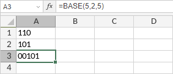

BASE funkcija
Funkcija BASE je jedna od matematičkih i trigonometrijskih funkcija. Koristi se za konvertovanje broja u tekstualni prikaz sa zadatom osnovom.
Sintaksa
BASE(number, radix, [min_length])
Funkcija BASE ima sledeće argumente:
| Argument | Opis |
|---|---|
| number | Broj koji želite da konvertujete. Ceo broj veći ili jednak 0 i manji od 2^53. |
| radix | Osnova u koju želite da konvertujete broj. Ceo broj veći ili jednak 2 i manji ili jednak 36. |
| min_length | Minimalna dužina vraćenog niza. Ceo broj veći ili jednak 0 i manji od 256. Ovo je opcioni parametar. Ako je rezultat kraći od zadate minimalne dužine, vodeće nule se dodaju u niz. |
Napomene
Kako primeniti funkciju BASE.
Primeri
Slika ispod prikazuje rezultat koji vraća funkcija BASE.
